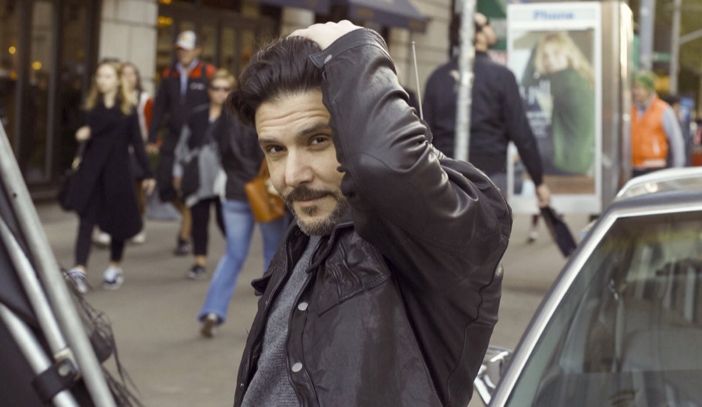
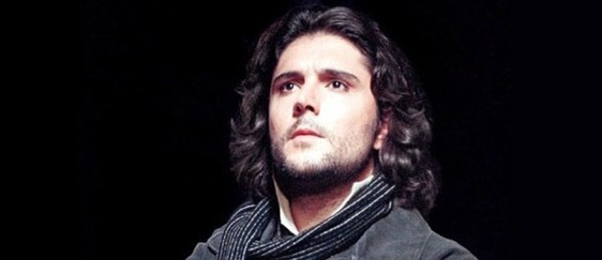

Biography
Massimo Giordano
An Italian tenor whose career now spans nearly three decades, from the great opera houses of Europe and America to a second act as artistic director, producer, cultural entrepreneur and Conservatory Professor.
Short biography — about 60 words
Massimo Giordano is an Italian tenor. In nearly three decades he has sung the great lyric and lirico-spinto roles at the Metropolitan Opera, La Scala, the Vienna State Opera, Covent Garden, the Opéra national de Paris and the Bavarian State Opera, with conductors including Abbado, Chailly, Maazel, Rattle, Mehta and Pappano. He is Artistic Director of the Minthis Music Festival in Cyprus and a Conservatory Professor in the singing class of the Conservatorio “Giovanni Pierluigi da Palestrina” in Cagliari.
Medium biography — about 250 words
Born in Pompei and raised in Trieste, Massimo Giordano grew up inside the Giuseppe Tartini Conservatory, where his father was caretaker. He trained there as a flautist and took his diploma in 1989 — then discovered his voice days before the final recital, and at eighteen moved to the singing class of the soprano Cecilia Fusco. He went on to work for many years with Aldo Danieli, chorus master at La Fenice.
He sang in the chorus of the Teatro Verdi in Trieste from 1992 to 1995. In 1997 he won the “Adriano Belli” competition of the Teatro Lirico Sperimentale in Spoleto — the contest that launched Corelli, Bastianini, Moffo, Raimondi, Bruson and Devia — and made his professional debut in the title role of Mozart’s La clemenza di Tito.
Two 2001 debuts changed the trajectory: La Scala, in Verdi’s Un giorno di regno, and the Salzburg Festival as Fenton in Falstaff, engaged under Claudio Abbado with the Berliner Philharmoniker and ultimately conducted by Lorin Maazel in Declan Donnellan’s production. From there came Madrid, Dresden, Glyndebourne, Carnegie Hall and, in 2006, his Metropolitan Opera stage debut as Des Grieux in Massenet’s Manon opposite Renée Fleming.
His voice grew into the lirico-spinto repertoire — Cavaradossi, Don Carlo, Don José, Andrea Chénier, Maurizio, Des Grieux in Manon Lescaut under Sir Simon Rattle. His debut album Amore e Tormento was released by BMG in 2013.
Today he divides his work between the stage, the Minthis Music Festival in Cyprus — which he founded as Artistic Director — and the singing class at the Conservatorio di Cagliari.

Full biography
The long version
Trieste, and a conservatory for a home
Giordano was born in Pompei, into a working-class family with no professional musicians in it — but with a father who sang, and a Neapolitan feeling for song that marked him for good. In 1977 the family moved north from Boscoreale to Trieste, where his father had taken a position as caretaker at the Giuseppe Tartini Conservatory. In his own words it was a genuine turn of fate: he grew up inside a conservatory building, with music at the centre of daily life long before he thought of himself as a singer.
He trained there first as a flautist, studying with Giorgio Marcossi and completing his diploma under Daniele Ruggeri in 1989. Those years spent inside musical structure, phrasing and orchestral colour are something he has often credited for the way he later approached singing — thinking as much like a musician inside the orchestra as a soloist standing in front of it.
The voice arrived almost by accident. A few days before his flute diploma recital, a blind pianist friend asked him to sing a Neapolitan song; his father, who had a light tenor voice himself, had always said the boy could sing too. The friend stopped him mid-phrase: what are you doing with that flute — you should be studying opera. At eighteen, on the eve of his instrumental graduation, Giordano changed course and began vocal studies with the soprano Cecilia Fusco, who built the technical foundations — breath control, legato, clarity of text — that stayed with him. He then worked for many years with Aldo Danieli, vocal technique specialist and for most of his career chorus master at Teatro La Fenice in Venice, until Danieli’s death in Trieste in September 2021.
The Italian years, 1992–2000
Before any solo breakthrough he sang in the chorus of the Teatro Verdi in Trieste, from 1992 to 1995 — three years inside real productions, years before his own professional debut. The break came in 1997, with the “Adriano Belli” competition of the Teatro Lirico Sperimentale in Spoleto, which brought his debut in the title role of Mozart’s La clemenza di Tito at the Teatro Caio Melisso. Engagements across Italy followed quickly: Alfredo in La traviata and a first Werther in Spoleto, Ernesto in Don Pasquale at the Teatro Verdi in Trieste, Roméo opposite Mariella Devia at the Teatro Regio di Parma, and the fuller unveiling of Werther at the Teatro Valli in Reggio Emilia in 1998.
In 2000 he sang Jean in Massenet’s Le Jongleur de Notre-Dame at the Teatro dell’Opera di Roma under Gianluigi Gelmetti, opening the house’s season for the Great Jubilee — a run released as a live recording. Reviewing it in the Corriere della Sera, Paolo Isotta singled him out as a genuine discovery: an exceptional actor with a beautiful timbre, real vocal discipline and clear diction, all the more striking given how physically punishing the staging was.
The international breakthrough, 2001
Two debuts in a single year changed everything. On 21 September 2001 he made his La Scala debut as Edoardo di Sanval in Verdi’s early comedy Un giorno di regno, in the theatre’s Progetto Giovani, conducted by Corrado Rovaris with sets and costumes by Pier Luigi Pizzi. That same year came the Salzburg Festival: Fenton in Verdi’s Falstaff, engaged under Claudio Abbado with the Berliner Philharmoniker, with performances ultimately conducted by Lorin Maazel in a production directed by Declan Donnellan.
His Teatro Real debut followed in 2002 as the Duke in Rigoletto, the Semperoper Dresden in late 2003 as Rodolfo in La bohème; Zurich and Toulouse came later. In 2004 he sang Rinuccio in Gianni Schicchi at Glyndebourne under Vladimir Jurowski, a production later released on DVD. On 7 April 2005 he made his New York debut — not at the Met but at Carnegie Hall, as Wilhelm Meister in a concert performance of Thomas’s Mignon with the Opera Orchestra of New York under Eve Queler. His Metropolitan Opera stage debut came on 5 April 2006, as Des Grieux in Massenet’s Manon opposite Renée Fleming, broadcast internationally three days later.
Two decades on the world’s great stages
From there he entered regular rotation at the Royal Opera House Covent Garden, the Opéra national de Paris, the Vienna State Opera, the Bavarian State Opera, the Deutsche Oper Berlin, the Staatsoper Unter den Linden, Lyric Opera of Chicago and Los Angeles Opera, alongside continued work in Rome, Naples, Venice and Parma.
His Rodolfo was heard in Paris, Munich, Vienna, London, Berlin, New York and Los Angeles; his Alfredo at the Met, in Munich, Berlin, Moscow, Parma, Trieste, at La Scala under Lorin Maazel, in Los Angeles and at Santa Fe Opera — his American stage debut. His Roméo travelled to Munich, Frankfurt, Chicago and Pittsburgh.
By the end of the 2000s the voice had moved into fuller, more dramatic territory. Don José took him to Berlin, Vienna and Zurich. Cavaradossi — first sung at Dallas Opera in 2008 — became his most recurring part, carrying him to Munich, Vienna, Rome, Dresden, Stuttgart, San Francisco, London, New York, the Bolshoi and more than a dozen other houses across two decades. He sang the title role of Verdi’s Don Carlos in Berlin, Amsterdam and at the Maggio Musicale Fiorentino under Zubin Mehta, and in autumn 2019 the rarely performed French version for the first time, in a new Stuttgart production. In February 2015 he sang the title role of Andrea Chénier at the Vienna State Opera under Marco Armiliato, directed by Otto Schenk.
Other role debuts of this stretch: Gabriele Adorno in Simon Boccanegra in Hamburg; Foresto in Attila at the Deutsche Oper Berlin, later in Lyon and Paris; Maurizio in a new Adriana Lecouvreur in Vienna. Perhaps the most demanding assignment was Des Grieux in Puccini’s Manon Lescaut at the Baden-Baden Easter Festival and in Berlin with the Berlin Philharmonic under Sir Simon Rattle, in Richard Eyre’s production opposite Eva-Maria Westbroek — a role he later returned to at Covent Garden under Sir Antonio Pappano.
Few parts have stayed with him as consistently as Werther, from that first Spoleto performance in 1997 through Munich in 2010 opposite Vesselina Kasarova, and on to Berlin, Zurich, Toulouse and the Opéra national du Rhin in Strasbourg.


Concert, sacred music, recording
He has sung Verdi’s Requiem repeatedly across Europe under Riccardo Chailly, and in Rome in 2005 under Gianluigi Gelmetti in memory of Pope John Paul II. On 31 December 2000 he was a soloist in the Berliner Philharmoniker’s New Year’s Eve Concert, a Verdi gala conducted by Claudio Abbado, released as Gala from Berlin 2000 · Tutto nel mondo. On 31 December 2015 he returned to New Year’s Eve for the Festspielhaus Baden-Baden Silvesterkonzert with Angel Blue and Erwin Schrott, under Gérard Korsten, broadcast on arte and SWR.
He has appeared at the Concertgebouw in Amsterdam, the Berliner Philharmonie, the Musikverein in Vienna — Puccini’s Messa di Gloria — on Palace Square at the Hermitage in St Petersburg, and in recital at the Auditorium Franco Zeffirelli in Florence with the pianist Adele Aronzo.
On 29 October 2012 he signed an exclusive agreement with BMG Rights Management. His debut solo album Amore e Tormento was recorded in Florence with the Ensemble del Maggio Musicale Fiorentino under Carlo Goldstein and released on 6 May 2013, moving through the great Italian romances of the verismo and late-Romantic repertoire alongside a handful of lesser-known gems. Its music video, for “Marcella”, was filmed in Naples and along the Amalfi Coast, directed by Marisa Crawford.
The second act: festival, production, teaching
Giordano’s first venture as artistic director was The Encore Classical Music Festival in Marbella, Spain, which ran from 2022 to 2023. Its opening event, on 20 July 2022 at the Marbella Arena, brought Zubin Mehta to conduct the Orchestra and Chorus of the Maggio Musicale Fiorentino in Beethoven’s Ninth — proof that three decades of relationships in the orchestral world could be converted into producing power.
Since 2024 he has been Artistic Director of the Minthis Music Festival, staged in the open-air amphitheatre of the Minthis resort in the hills above Paphos, Cyprus, presented by Pafilia. What began as an intimate two-evening series grew in 2025 into a five-night festival — the La Scala String Quartet’s Cyprus debut, Pablo Sáinz-Villegas, Rachel Portman, Niklas Liepe, Raphaela Gromes — and returned in July 2026 with Florian Christl, Jeneba Kanneh-Mason, the Vision String Quartet, Günther Groissböck and Claire Martin. A fourth edition is confirmed for 2027. The festival is produced by Laimtee, which he co-founded, and which also produces concerts and theatre beyond Cyprus.
Alongside this he holds a professorship in the singing class at the Conservatorio Statale di Musica “Giovanni Pierluigi da Palestrina” in Cagliari — a full post in a state institution, two teaching days a week, travelling in from Trieste. Performer, producer and Conservatory Professor: three tracks that feed one another, built on the same thirty years.
Career timeline
Year by year
Compiled from official biographical material, theatre archives, press coverage and Operabase records.
- 1989Flute diploma, Conservatorio “G. Tartini”, Trieste. Begins vocal studies with Cecilia Fusco; later works for many years with Aldo Danieli.
- 1992–95Chorus of the Teatro Verdi, Trieste.
- 1997Wins the “Adriano Belli” competition, Spoleto. Professional debut in the title role of La clemenza di Tito, Teatro Caio Melisso. Also Alfredo (La traviata) and a first Werther in Spoleto; Ernesto (Don Pasquale), Teatro Verdi, Trieste.
- 1998Fuller unveiling of Werther, Teatro Valli, Reggio Emilia.
- 1999Rossini Opera Festival, Pesaro (Adina); Il Principe Alexis in Umberto Giordano’s Siberia, Wexford Festival Opera; Roméo opposite Mariella Devia, Teatro Regio di Parma.
- 2000Jean, Le Jongleur de Notre-Dame, Teatro dell’Opera di Roma, Gelmetti — Great Jubilee season opening. 31 December: soloist, Berliner Philharmoniker New Year’s Eve Concert under Claudio Abbado.
- 2001La Scala debut, 21 September, Un giorno di regno. Salzburg Festival debut as Fenton in Falstaff, Maazel / Donnellan. Ruggero, La rondine, Rome; the Duke, Rigoletto, Arena di Verona and Teatro Real Madrid; Oronte, I Lombardi, Cremona · Como · Pavia · Bergamo.
- 2002Rinuccio, Gianni Schicchi, Rome; Ernesto, La Fenice, Venice; Alfredo, The Santa Fe Opera — American stage debut; La traviata, Tokyo; Don Ottavio, Teatro San Carlo, Naples.
- 2003Rodolfo, Teatro dell’Opera di Roma, directed by Franco Zeffirelli. Vienna State Opera debut as Nemorino. Semperoper Dresden debut as Rodolfo.
- 2004La traviata, Deutsche Oper Berlin. Rinuccio, Glyndebourne Festival under Vladimir Jurowski, plus a BBC Proms performance. Verdi Requiem, Oper Leipzig, Riccardo Chailly. Roméo, Oper Frankfurt.
- 20057 April: New York debut as Wilhelm Meister in a concert Mignon, Carnegie Hall, Eve Queler. Don Ottavio, Teatro Regio di Torino. Rodolfo, Staatsoper Unter den Linden.
- 20065 April: Metropolitan Opera stage debut as Des Grieux in Manon opposite Renée Fleming; broadcast internationally 8 April. Des Grieux at La Scala under Ion Marin. Roméo, Pittsburgh Opera and Lyric Opera of Chicago. Rodolfo, Bavarian State Opera.
- 2007Ruggero, Dallas Opera. Rinuccio, Il Trittico, Metropolitan Opera under James Levine. Faust, La Damnation de Faust, Welsh National Opera. La traviata, La Scala, Lorin Maazel. Rodolfo, LA Opera.
- 2008Des Grieux opposite Anna Netrebko, Vienna State Opera. Werther, Bavarian State Opera. Tosca role debut, Dallas Opera. Lensky, Eugene Onegin, Glyndebourne, Jurowski / Vick. La traviata and La bohème at the Met, Zeffirelli productions.
- 2009Don José, Deutsche Oper Berlin debut. 31 March: Nemorino opposite Angela Gheorghiu, Metropolitan Opera. Macduff, Macbeth, Edinburgh International Festival. 1 October: concert with Anna Netrebko, Salle Pleyel, Paris. Rodolfo, Opéra national de Paris.
- 2010Don José, Vienna State Opera, Zeffirelli production. Des Grieux, Teatro dell’Opera di Roma. Werther, Bavarian State Opera, opposite Vesselina Kasarova.
- 2011Don José, Munich (Lina Wertmüller) and Opernhaus Zürich debut. Roméo, Vienna State Opera. Tosca, Opéra national de Paris and Savonlinna Opera Festival. Don Carlo, Deutsche Oper Berlin.
- 2012Pollione, Norma, Nice and Paris. Don José, Zurich, conductors including Plácido Domingo. Tosca: Munich, Zurich (Fabio Luisi), San Francisco Opera debut.
- 2013Tosca at the Deutsche Oper Berlin, Bilbao, Royal Opera House London, Bavarian State Opera (Kirill Petrenko). Don Carlo, Maggio Musicale Fiorentino, Zubin Mehta, directed by Luca Ronconi. 6 May: debut album Amore e Tormento released. Foresto, Attila, Deutsche Oper Berlin. 3 September: opens the Vienna State Opera season as Alfredo.
- 2014Maurizio, Adriana Lecouvreur, Vienna State Opera. Des Grieux, Manon Lescaut, Baden-Baden Easter Festival under Sir Simon Rattle, plus Berliner Philharmoniker concert performances. Pollione, Vienna. Tosca, Opéra national de Paris, directed by Pierre Audi.
- 2015February: title role of Andrea Chénier, Vienna State Opera, Marco Armiliato / Otto Schenk. Tosca, Metropolitan Opera. Manon Lescaut, Deutsche Oper Berlin. 31 December: Silvesterkonzert, Festspielhaus Baden-Baden, with Angel Blue and Erwin Schrott.
- 2016La traviata, Hamburg State Opera. Don Carlo, El Escorial. Manon Lescaut, Hannover and Royal Opera House London under Sir Antonio Pappano. Tosca, Seoul. Concert in Florence under Zubin Mehta.
- 2017Don José, New National Theatre Tokyo. Tosca, Hamburg and Trieste. Maurizio, Karlsruhe. Manon Lescaut, Auckland. Foresto, Opéra de Lyon and Théâtre des Champs-Élysées. Gabriele Adorno, Hamburg State Opera debut.
- 2018Tosca, Royal Opera House London, Teatro dell’Opera di Roma, Deutsche Oper Berlin, Stuttgart. Werther, Opéra national du Rhin, Strasbourg. Ismaele, Nabucco, Lyon and Paris.
- 2019Tosca, Warsaw and Seoul. La traviata, Staatsoper Unter den Linden. Pollione, Stuttgart. October: first performance of the French version of Don Carlos, new Stuttgart production.
- 2020–21Tosca, Vienna State Opera and Bolshoi Theatre, Moscow. Ismaele, Nabucco, Vienna State Opera. 19 September 2021: death of his longtime teacher Aldo Danieli in Trieste.
- 202219 April: benefit concert “Help for Ukraine”, Klagenfurt. 20 July: opens The Encore Classical Music Festival in Marbella as Artistic Director, with Zubin Mehta conducting Beethoven’s Ninth.
- 2023Second and final Marbella edition. 14 February: recital with the pianist Adele Aronzo, Auditorium Franco Zeffirelli, Florence.
- 2024First edition of the Minthis Music Festival, Paphos, Cyprus. Ester Kandinova joins Laimtee as co-founder and producer. Professorship in the singing class, Conservatorio “Giovanni Pierluigi da Palestrina”, Cagliari.
- 20259–13 July: second Minthis Music Festival, expanded to five nights — La Scala String Quartet (Cyprus debut), Pablo Sáinz-Villegas, Rachel Portman, Niklas Liepe, Raphaela Gromes.
- 20268–12 July: third Minthis Music Festival — Florian Christl, Jeneba Kanneh-Mason, Vision String Quartet, Günther Groissböck, Claire Martin. 17 September: Parlami d’Amore recital, Laeiszhalle, Hamburg. 19 September: Opera Night Under the Stars, Ancient Theatre of Kourion, Cyprus.
- 2027Fourth Minthis Music Festival, confirmed; dates to be announced.